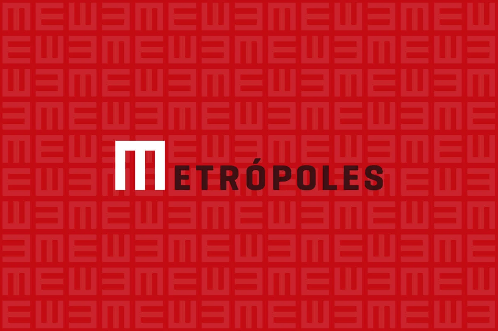
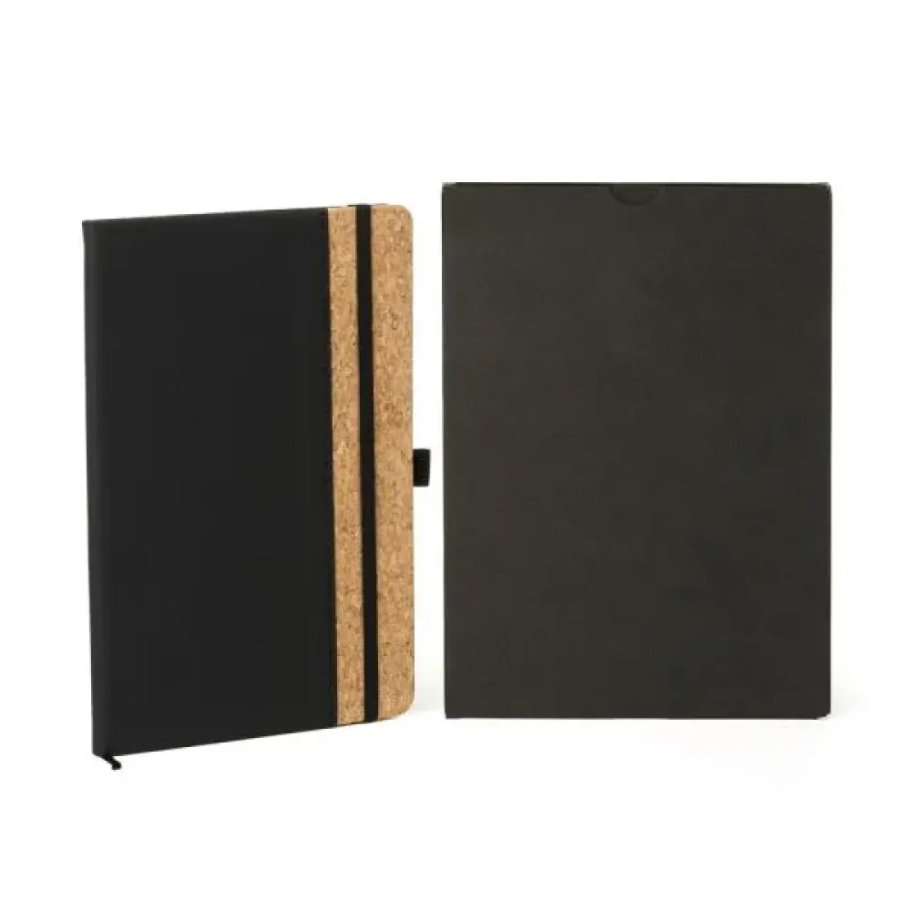
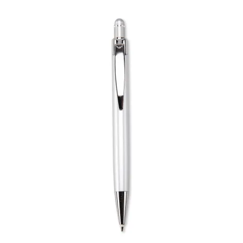
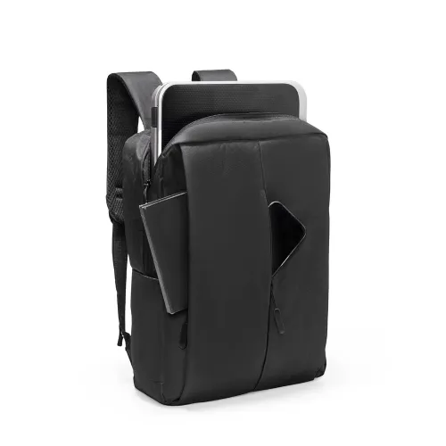
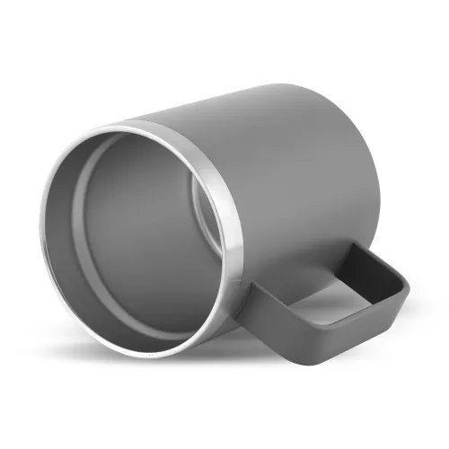
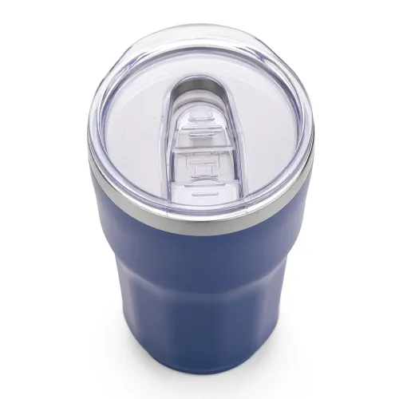
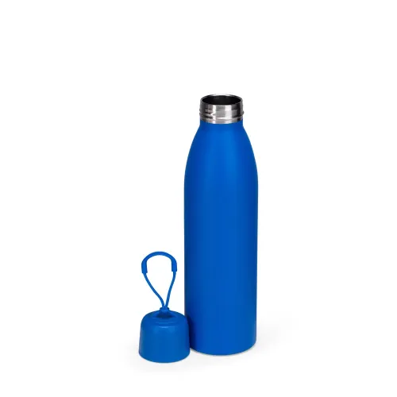
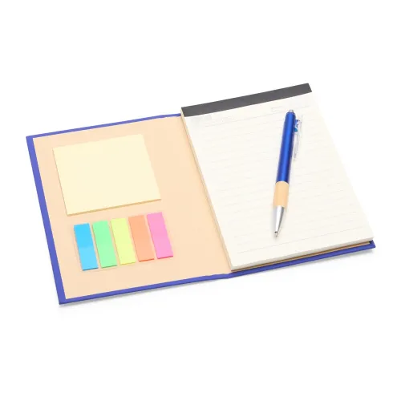
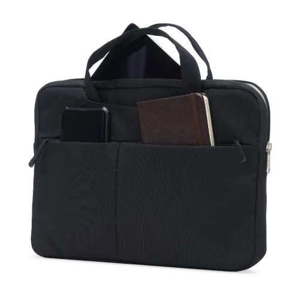

Caderno premium
Caderno C/ Pauta - Preto - 14X21Cm
Ref. LE-10371
Caderno para anotações com capa dura preta, composição com cortiça, folhas pautadas, marcador de página, porta-caneta e elástico para fechamento.
PRETO
Curadoria de brindes corporativos para um ecossistema de notícia, influência e relacionamento: visual editorial, alto uso diário e presença premium.
A identidade pública do Metrópoles combina alta legibilidade, contraste forte e vermelho como cor de urgência editorial. O catálogo traduz isso em páginas limpas, grids funcionais e produtos com utilidade real.
Base off-white, preto editorial e vermelho como assinatura. Tipografia sem serifa, títulos compactos e hierarquia direta.
Brindes para equipes, eventos, parceiros, anunciantes, ações comerciais e relacionamento institucional.
Inspirado no catálogo anexo: páginas arejadas, cards por produto, códigos de referência e narrativa consultiva antes da seleção.
Curadoria com foco em personalização, disponibilidade, viabilidade operacional e acabamento percebido.

Ref. SQZ LE-10371
Caderno para anotações com capa dura preta, composição com cortiça, folhas pautadas, marcador de página, porta-caneta e elástico para fechamento.

Ref. SQZ 06076TE
Caneta metálica com ponteira e clip com acabamento refletivo, acionamento por clique, carga esferográfica azul de 1,0 mm e...

Ref. SQZ 08182
A Mochila de Poliéster 15 Litros combina funcionalidade e design moderno, ideal para acompanhar o dia a dia no trabalho ou...

Ref. SQZ CA9530
Caneca térmica 400ml, produzida em inox reciclado (304 interno / 201 externo), com tampa em bambu, pintura a pó.

Ref. SQZ 08114B
Copo térmico com capacidade máxima de 300ml. Possui estrutura de parede dupla com interior em inox 304 e exterior em inox...

Ref. SQZ 19059
Garrafa térmica de parede dupla, com parte externa em inox 201 e pintura aplicada por spray, e camada interna em inox 304....

Ref. SQZ 19030
Kit executivo com três peças, composto por uma caderneta, uma caneta e uma lapiseira. A caderneta possui capa dura em...

Ref. SQZ 18672
Pasta Executiva para Tablet e Notebook 13* Polegadas.
Ref. LE-10371
Caderno para anotações com capa dura preta, composição com cortiça, folhas pautadas, marcador de página, porta-caneta e elástico para fechamento.
PRETORef. 06076TE
Caneta metálica com ponteira e clip com acabamento refletivo, acionamento por clique, carga esferográfica azul de 1,0 mm e...
AZUL, COBRE, DOURADO, PRATA, PRETORef. 08182
A Mochila de Poliéster 15 Litros combina funcionalidade e design moderno, ideal para acompanhar o dia a dia no trabalho ou...
-, AZUL, CINZA, PRETORef. CA9530
Caneca térmica 400ml, produzida em inox reciclado (304 interno / 201 externo), com tampa em bambu, pintura a pó.
BRANCO, CINZA, PRETORef. 08114B
Copo térmico com capacidade máxima de 300ml. Possui estrutura de parede dupla com interior em inox 304 e exterior em inox...
AZUL, BRANCO, LARANJA, PRETO, VERDERef. 19059
Garrafa térmica de parede dupla, com parte externa em inox 201 e pintura aplicada por spray, e camada interna em inox 304....
AZUL, BRANCO, LARANJA, PRETO, VERDERef. 19030
Kit executivo com três peças, composto por uma caderneta, uma caneta e uma lapiseira. A caderneta possui capa dura em...
AZUL, BAMBU, LARANJA, PRETO, VERDERef. 18672
Pasta Executiva para Tablet e Notebook 13* Polegadas.
CINZA, PRETO, ROSACaderno premium, caneta executiva e copo térmico. Ideal para equipe interna e onboarding.
Mochila notebook, garrafa térmica e acessórios de escritório. Pensado para reportagem, eventos e ativações.
Kit executivo, caneca térmica e pasta notebook. Indicado para anunciantes, reuniões comerciais e relacionamento.
Aplicação do logo Metropolis em baixo relevo, silk, gravação a laser, UV ou etiqueta, conforme material e lote.
Definir quantidades, verba por kit e ocasião de uso para fechar shortlist técnica e cotação.